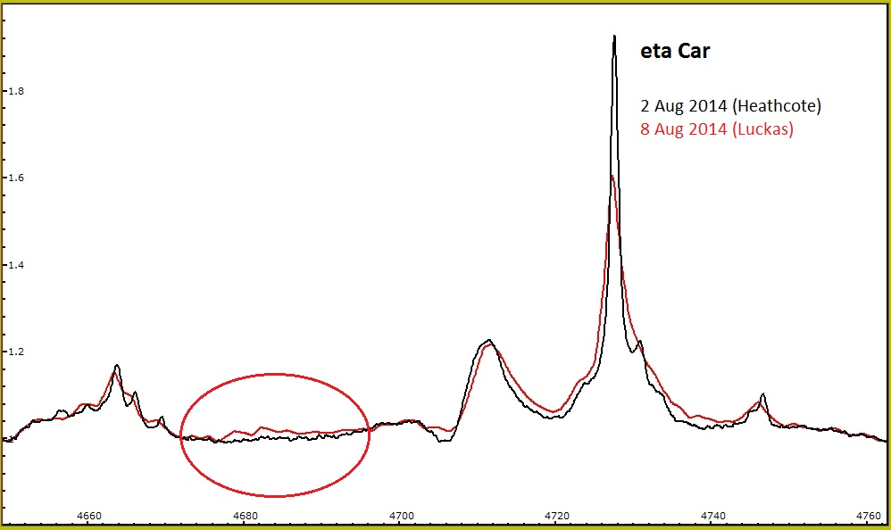
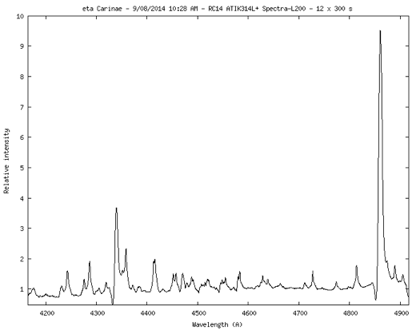
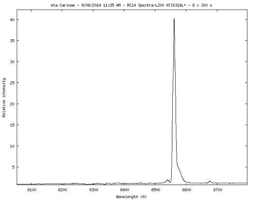

A spectrum obtained on August 8 reveals the transition of HeII from minimum to P3

(plot courtesy of Bernard Heathcote).
Additional spectra taken on August 9, nearing the end of this campaign, processed using ISIS.
1. HeII:

2. Ha:
